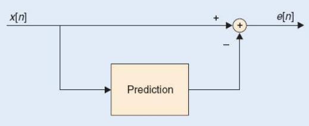
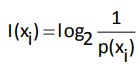
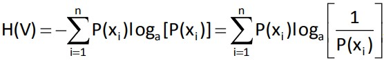
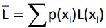

El códec de audio libre sin pérdidas (Free Lossless Audio Codec) es un formato de compresión desarrollado por la fundación Xiph.org, sin fines de lucro, que permite la compresión de audio sin pérdida de calidad de modo que el tamaño del archivo se reduce significativamente sin que se pierda información.
2000
El proyecto fue iniciado y desarrollado por el programador Josh Coalson.
2001
Se publica la primera versión el 20 de julio.
2003
El proyecto FLAC se incorpora a la Fundación Xiph.Org.
2006 - FLAC 1.1.3
Compresión, recuperación de archivos corruptos y soporte multicanal.
2007 - FLAC 1.1.4
Mejoras en la compresión y la velocidad de codificación y decodificación.
2013 - FLAC 1.3.0
Pequeñas mejoras. Se pasa el desarrollo al repositorio git de Xiph.org.
2022 - FLAC 1.3.4
Mejoras de seguridad, arreglo de bugs y errores, pequeñas mejoras generales.
Sin pérdida
No hay pérdida de información en el proceso de codificación y el audio decodificado es idéntico al utilizado en la codificación.
Soporta metadatos
Soporta etiquetas, portada de álbum, seek tables, cue sheets, etc.
Rápidez
Cuenta con alta velocidad de decodificación que requiere menos poder computacional que otros codecs.
Código libre
FLAC es de código abierto, gratis, multiplataforma y cuenta con documentación para el público en general.
8 niveles de compresión
Cuenta con 8 niveles de compresión, siendo el 8 el nivel más lento, resultando en menos espacio y el 0 el más rápido y mayor espacio. A pesar de esto, la decodificación siempre es bastante rápida.
Canales
FLAC cuenta con hasta 8 canales de audio que pueden ser agrupados en casos como estéreo, 5.1 o Left/Right.
Compresión
Al comprimir un archivo puede reducir su tamaño en un 50% sin perder la calidad.
Muestra de audio
Admite una resolución PCM de 4 a 32 bits por muestra de punto fijo y una frecuencia desde 1 Hz hasta 655.35 KHz en incrementos de 1 Hz.
Señal de audio
Un audio es una señal analógica eléctricamente exacta a una señal sonora; normalmente está acotada al rango de frecuencias audibles por los seres humanos, que está aproximadamente entre los 20 y los 20.000 Hz.
Blocking
Esta etapa divide la señal de audio de entrada en bloques contiguos o porciones de un tamaño específico. El tamaño óptimo del bloque generalmente se ve afectado por muchos factores. Aunque FLAC permite que el tamaño del bloque varíe dentro de una transmisión, el codificador de referencia usa un tamaño de bloque fijo.
El tamaño usado para dividir en bloques los datos del audio tiene un efecto directo en la relación de compresión. Si el bloque es demasiado pequeño, el número total de bloques aumentará, desperdiciando bits en la codificación de encabezados, de lo contrario, las características de la señal pueden variar tanto que el codificador tendrá problemas de editabilidad y de poder ajustar correctamente la señal o calcular los parámetros de codificación óptimos para el predictor.
Para simplificar el diseño del codificador/decodificador, FLAC impone un tamaño de bloque mínimo de 16 samples y un tamaño de bloque máximo de 65535 samples.
Prediction
El codificador intenta encontrar una descripción matemática de la señal (aproximación), esta descripción es usualmente mucho más pequeña que la señal original. FLAC permite que la clase de predictor cambie de un bloque a otro, o incluso dentro de los canales de un bloque.
Se basa en utilizar un sistema de predicción lineal que genera, para cada trama, una señal discreta de error, e[n]. Los parámetros del predictor representan la redundancia que es eliminada de la señal. Es capaz de predecir el valor de una muestra x[n] a partir del valor de las muestras precedentes: x[n − 1], x[n − 2].
Inter-channel Decorrelation
La etapa de descorrelación entre canales o intercanal elimina la redundancia en las señales de estéreo. Al codificar los canales izquierdo y derecho en un canal central se puede reducir el número de bits necesarios para almacenar la señal. En casos donde los canales derecho e izquierdo son muy diferentes se puede pasar sin ninguna descorrelación.
Los canales izquierdo y derecho son codificados de forma independiente.
Los canales son transformados en un canal central (punto medio) y en un canal lateral (diferencia).
El canal izquierdo y el lateral son codificados.
El canal izquierdo y el lateral son codificados
Entropy Coding
Se trata la redundancia estadística, que es la que se produce por no usar un código fuente óptimo. Para buscar ese código fuente óptimo, se toman como referencia los valores estadísticos de la señal para eliminar este tipo de redundancia. El objetivo de la codificación es obtener una representación eficiente de los símbolos de la señal. Tiene como objetivo eliminar la redundancia de la señal obtenida, e[n].
La entropía determina el límite máximo al que se puede comprimir un mensaje usando un enfoque símbolo a símbolo sin ninguna pérdida de información, el límite de compresión (en bits) es igual a la entropía multiplicada por el largo del mensaje. Su cálculo se realiza a partir de su distribución de probabilidad p(x) mediante la siguiente fórmula:
Su principio básico es que se asignan códigos más cortos a símbolos con mayor probabilidad de aparición. Por tanto, la longitud del código será:
Dónde L(xi) representa la longitud (bits) del símbolo codificado.
Señal comprimida
La compresión de audio es una forma de compresión de datos, específicamente en la reducción del tamaño de los archivos de audio. Los algoritmos de compresión de audio normalmente son llamados códecs de audio.
FLAC es el acrónimo en inglés de un formato o mejor dicho codec de compresión sin pérdida cuyas siglas corresponden a las de “Free Lossless Audio Codec”. El audio digital comprimido por este algoritmo viene a reducirse típicamente entre un 50 y un 60% de su tamaño original, descomprimiéndose posteriormente en una copia idéntica lo que se consigue mediante la predicción lineal para convertir las muestras de datos en series de pequeños números no correlativos (conocidos como "residuos") que se almacenan eficientemente usando la codificación Golomb-Rice.
Además de esto, para aprovechar los silencios donde los valores numéricos presentan mucha repetición, el algoritmo del FLAC usa un método de codificación por longitud de pista o "RLE“ (Run-Length Encoding") para muestras idénticas.
A diferencia de otros formatos para la compresión del tamaño de los ficheros de música como el MP3, WMA, AAC u Ogg Vorbis, que sí que tienen aunque sea en mayor o menor medida pérdidas de calidad al basarse todos ellos en la reducción del tamaño de los ficheros o tracks por eliminación de ciertas frecuencia.
El formato o codec FLAC es ideal para la música por cuanto con él se logra reducir el tamaño de los archivos originales en PCM-WAV a prácticamente la mitad sin que se pierda absolutamente nada de calidad como si se tratara de un ZIP o un RAR especialmente ideado para la música, lo que ha hecho que el FLAC se convierta en uno de los formatos preferidos para la venta de música por Internet.
Soporte
El codec FLAC no soporta muestras en coma flotante, sino en coma fija.
Tasa de muestreo
Admite cualquier tasa de muestreo desde 1 hasta 655.350 Hz en incrementos de 1 Hz.
Número de canales
Admite cualquier número de canales de audio desde uno a ocho los cuales pueden ser agrupados.
Archivo
Existe un archivo conocido como ALAC(Apple Lossless), es similar en cuanto a funcionamiento al FLAC. Usa compresión, aunque ésta no es tan eficiente como la del FLAC por lo que los archivos son un poco más grandes.